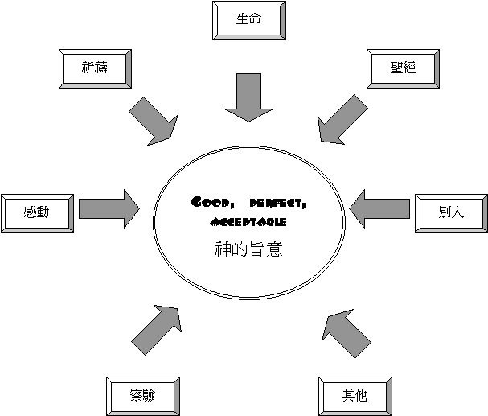

|
如何明白神的旨意 |
|||
|
定定 義義 |
方 法 |
實 例 |
榜 樣 |
引言：
「如何明白神的旨意，是否單單祈禱就可以明白」
「只要心裏有平安，就是神旨意」
〜究竟如何明白神的旨意，聖經又怎說的?
一.
美好生命
1.立志遵行
「耶穌說：「我的教訓不是我自己的，乃是那差我來者的。人若立志遵著他的旨意行，就必曉得這教訓或是出於神，或是我憑著自己說的。」約7:16-17
「你們若遵行我所吩咐的，就是我的朋友了。以後我不再稱你們為僕人，因僕人不知道主人所做的事。我乃稱你們為朋友；因我從我父所聽見的，已經都告訴你們了。」約15:14-15
〜人若立志遵守神的話，他必能明白一些事情是出於神的意思還是人的意思。
〜另外，人若遵守主的話，是主的朋友，他不是僕人，僕人未必明白主人所作的事，朋友必明白的！所以有遵守神話的決心及行動是明白主心意的重要關鍵，人若沒有心遵行，可不斷祈求，他可能都是憑自己意思尋求。
2.敬畏真神
「誰敬畏耶和華，耶和華必指示他當選擇的道路。」詩25:12
「敬畏耶和華是知識的開端；愚妄人藐視智慧和訓誨。」箴1:7
〜人有敬畏神的心，神必賜福他，會指引他當行的路！
3.作屬靈人
「然而，屬血氣的人不領會神聖靈的事，反倒以為愚拙，並且不能知道，因為這些事惟有屬靈的人才能看透。屬靈的人能看透萬事，卻沒有一人能看透了他。誰曾知道主的心去教導他呢？但我們是有基督的心了。」林前2:14-16
「你們仍是屬肉體的，因為在你們中間有嫉妒、分爭，這豈不是屬乎肉體、照著世人的樣子行嗎？」林前3:3
〜屬靈人明白神的事，並能看透萬事，但屬肉體，血氣的人，他們充滿嫉妒，紛爭，情慾，體貼自己的意思，行一些與聖靈為敵的事，根本難明白是與非，聖靈的意思。
4.心意更新
「不要效法這個世界，只要心意更新而變化，叫你們察驗何為神的善良、純全、可喜悅的旨意。」羅12:2
〜要清楚明白神心意，人的心要不斷更新及變化，將世俗不好的想法更新，要知神要及不要的事。
〜因此一個生命及靈性差的人，若尋求神旨意，很多時候，未必有答案，即使有也可能是自己的意念。
二.
專心尋求
1.求得智慧
「因此，我們自從聽見的日子，也就為你們不住的禱告祈求，願你們在一切屬靈的智慧悟性上，滿心知道神的旨意。」西1:9
「求我們主耶穌基督的神，榮耀的父，將那賜人智慧和啟示的靈賞給你們，使你們真知道祂。」弗1:17
「你們中間若有缺少智慧的，應當求那厚賜與眾人、也不斥責人的神，主就必賜給他。」雅1:5
〜要明白神，知道祂的旨意，需要有智慧與悟性，從何而得，可以坦然向神求
2.耐性祈求
「你們祈求，就給你們；尋找，就尋見；叩門，就給你們開門。因為凡祈求的，就得著；尋找的，就尋見；叩門的，就給他開門。」太7:7-8
「那時，耶穌出去，上山禱告，整夜禱告神。到了天亮，叫他的門徒來，就從他們中間挑選十二個人，稱他們為使徒。」路6:12-13
〜耶穌在世，祂雖有智慧，但在揀選使徒上，仍認真整夜禱告。
三. 聖經為本
1.清楚意旨
「是因他們違背神的話語，藐視至高者的旨意。」詩107:11
「既從律法中受了教訓，就曉得神的旨意，也能分別是非（或作：也喜愛那美好的事）。」羅2:18
「神的旨意就是要你們成為聖潔，遠避淫行。」帖前4:3
「凡事謝恩；因為這是神在基督耶穌裡向你們所定的旨意。」帖前5:18
「神的旨意若是叫你們因行善受苦，總強如因行惡受苦。」彼前3:17
〜神的旨意在聖經裏已很清楚地表達出來，是不含糊的，例如
A.要聖潔
B.要以善對惡
C.常常喜樂
D.不住的禱告
E.要凡事謝恩
F.要行善（即使受苦）
〜還有很多（例如彼此相愛，彼此順服．．．．）人若求問神的心意，必須有以上的原則，若我們求問的是帶來不是喜樂，帶來不能彼此相愛，應不是神的心意。
2.定志考究
「以斯拉定志考究遵行耶和華的律法，又將律例典章教訓以色列人。祭司以斯拉是通達耶和華誡命和賜以色列之律例的文士。亞達薛西王賜給他們諭旨，上面寫著說：」拉7:10-11
〜以斯拉能遵行及教訓選民明白聖經，通曉神的話，因為他先有定志考究的心，若一個基督徒常常在人生決擇中求問神的旨意，但他從不認真尋求，如何明白!!
3.通曉明白
「撒都該人常說沒有復活的事。他們來問耶穌說：」可12:18
「當復活的時候，他是那一個的妻子呢？因為他們七個人都娶過他。耶穌說：「你們所以錯了，豈不是因為不明白聖經，不曉得神的大能嗎？」可12:23-24
〜人對聖經可能有熟悉，但若不明白，錯解聖經，對聖經中的大能奇事沒信心，人就難明白神的作為，神的計劃。
〜因此要掌握神的心意，人必須在聖經上下功夫，定志考究，努力研讀，也多操練以全面真理為神旨意的絕對原則！
四.
別人意見
1.父母意見
「你們作兒女的，要在主裡聽從父母，這是理所當然的。」弗6:1
「他父親也聽見他所許的願並約束自己的話，卻向他默默不言，他所許的願並約束自己的話就都要為定。但他父親聽見的日子若不應承他所許的願和約束自己的話，就都不得為定；耶和華也必赦免他，因為他父親不應承。」民30:4-5
〜神給地上的父母有很大權柄決定一些事情，在舊約中，即使女子向神許願，應承終身歸神，但父母有他的決定權，這是神容許的。
〜另外，新約教導我們在主裏聽從父母，只要父母所作的意見不違反真理，聽從是神喜悅的。
2.配偶意見
「你們作妻子的，當順服自己的丈夫，如同順服主。因為丈夫是妻子的頭，如同基督是教會的頭；他又是教會全體的救主。」弗5:22-23
「他若出了嫁，有願在身，或是口中出了約束自己的冒失話，他丈夫聽見的日子，卻向他默默不言，他所許的願並約束自己的話就都要為定。但他丈夫聽見的日子，若不應承，就算廢了他所許的願和他出口約束自己的冒失話；耶和華也必赦免他。」民30:6-8
〜丈夫是妻子的頭，丈夫在家庭，在屬靈帶領性是有重要角式，妻子在主裏應順服。
3.神僕意見
「不要藐視先知的講論。」帖前5:20
「屬靈的人能看透萬事，卻沒有一人能看透了他。」林前2:15
「你們年幼的，也要順服年長的。就是你們眾人也都要以謙卑束腰，彼此順服；因為神阻擋驕傲的人，賜恩給謙卑的人。」彼前5:5
〜神也給地上教會有權柄，帶領的通常對神的話有較多的認識，屬靈的神僕也能參透萬事，所以作為肢體，可多聽他們的建議。
4.肢體意見
「不要以惡報惡；眾人以為美的事要留心去做。若是能行，總要盡力與眾人和睦。」羅12:17-18
「所以弟兄們，當從你們中間選出七個有好名聲、被聖靈充滿、智慧充足的人，我們就派他們管理這事。」徒6:3
〜在初期教會中已在某一些事情中出現選擇制，神的靈很多時候不單感動個人，也感動全會眾，會眾們若在真理下的原則表達意願，神也用他們的意見的。
〜因此，環境、別人、肢體，教會的意見也十分重要的，我們千萬不可輕忽。
五.
感動平安
1.聖靈的感動
「不要消滅聖靈的感動；」帖前5:19
「但保惠師，就是父因我的名所要差來的聖靈，他要將一切的事指教你們，並且要叫你們想起我對你們所說的一切話。」約14:26
〜聖靈在我們心中，有引動、感動工作，當然信徒可以消滅聖靈感動，他也可以濫用「感動」(其實是自己的感受，而不是聖靈感動)，來滿足自己的意思。
〜而聖靈的感動一定不違反主的話，違反真理，因聖靈是真理的靈，若一個肢體有感動要責備對方，因為他得罪了自己，令自己滿肚憤恨，要發洩出來；但真理叫人和睦，叫人柔和，在真理中沒有血氣的不憤，所以這感動應不是從聖靈而來的。
〜聖靈也令人想起主的話，聖靈會用神話指引我們如何行信仰的路，若那人多讀聖經，主的話題醒時，他必能認出這意思是從聖經而來，不是自己的意思。
2.基督的平安
「又要叫基督的平安在你們心裡作主；你們也為此蒙召，歸為一體；且要存感謝的心。」西3:15
〜留意聖經說是「基督的平安」，不是自己覺得平安就可以行，問問內心是否有基督的平安，即是你內心和基督是一致、和諧，沒有衝突，是一體的，若我是主耶穌，我會怎樣做，以耶穌的心為心，所行的若是主也會如此行，這才是真正以基督的平安為主。
六.
不斷察驗
1.用神給的智慧察驗
「但要凡事察驗，善美的要持守，」帖前5:21
「因此，我們自從聽見的日子，也就為你們不住的禱告祈求，願你們在一切屬靈的智慧悟性上，滿心知道神的旨意；」西1:9
〜神也給人有智慧，悟性的，未必每一件事情雖要很清楚的感動與指引，例如「今日我要乘甚麼交通工具回學校」「我選文科或理科？」神給你有智慧的，可以分析好與不好，最合適自己是甚麼，只要不違反真理，也給你自由，運用常理分折。
2.用真神的屬性察驗
「不要效法這個世界，只要心意更新而變化，叫你們察驗何為神的善良、純全、可喜悅的旨意。」羅12:2
〜神的旨意包括了神的
“good” “perfect”
“acceptable”，多察驗這件是否神看為好，純全，良善，喜悅的，不斷更新而變化，多問有否做了一些事情違反神的誠實、公義、良善、完全屬性呢！
3.進到聖所安靜思索
「因為，我終日遭災難；每早晨受懲治。我若說，我要這樣講，這就是以奸詐待你的眾子。我思索怎能明白這事，眼看實係為難，等我進了神的聖所，思想他們的結局。你實在把他們安在滑地，使他們掉在沉淪之中。」詩73:14-18
〜人在困難、混亂、不忿中，很多時候，有很多事情是不明白的，但人若願靜一靜，走到聖所或走到神前思索，就發現原來有另一面的答案的。
〜因此神給人有悟性的，若人做一些事情在般人的常理(沒違反真理)也覺不通的，要小心，是否合宜去做呢？
七.
特別方法
1.求引證
「我如今站在井旁，對哪一個出來打水的女子說：請你把你瓶裡的水給我一點喝；他若說：你只管喝，我也為你的駱駝打水；願那女子就作耶和華給我主人兒子所預定的妻。』我心裡的話還沒有說完，利百加就出來，肩頭上扛著水瓶，下到井旁打水。我便對他說：『請你給我水喝。』」創24:43-45
〜舊約不少人也向神求特殊引證，但至新約，從使徒身上，很少看到類似經歷，因在舊約時代，神的話未普及及有很多舊約經卷，而聖靈也未降臨在人內心，在新約中，人對神話掌握比較多，而且真理的靈會作很多引導工作，所以他們可憑信心去行上主的路，不必再求引證。
〜當然聖經也沒否定新約教會不可以這樣作，例如我們也可以求證據驗証先知的靈是否真正的靈，但在求證過程要小心，不攔阻不等於神的旨意，有時神容許我們(不是喜悅)決定，行一些神不喜悅的事。
2.搖籤
「籤放在懷裡，定事由耶和華。」箴16:33
「眾人就禱告說：「主阿，你知道萬人的心，求你從這兩個人中，指明你所揀選的是誰，叫他得這使徒的位分。這位分猶大已經丟棄，往自己的地方去了。」於是眾人為他們搖籤，搖出馬提亞來；他就和十一個使徒同列。」徒1:24-26
〜在新舊約中，處理一些難解決的事，他們會向神搖籤，若眾人有信心，認真禱告尋求神，所為的都是神，也可以按領受搖籤決定事情。
〜當然新約搖籤是運用在個別事件，而後來也少題及，可能聖經漸形成，人對屬靈事參透也慢慢看得更準，所以我們也可先用之前所講的其它方法尋求神的心意，(因未必人人都有如此信心)
尋 求 方 法
